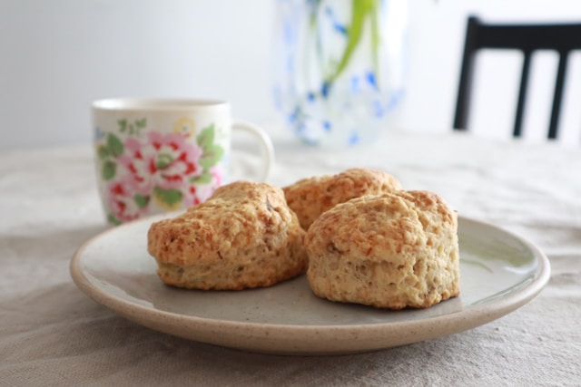

Grandmas Scones

Photo by EVERYDAY PaRIS on Unsplash
Description
These scones are what grandma use to make. I have fond memories of helping grandma in the kitchen, where I had to grab a chair to see over the sink. Sometimes we would much them up and they would come out burnt or flat, but always fun times cooking.
These scone are dense and have a cakie texture. They are great with just butter or add you favorite jam and cream. You can also add dried fruit to the mix for a little difference, we would ofter add dates to them
Ingredient
- 2 cups of Plain Flour
- 1/4 cup of sugar
- 2 teaspoon of baking powder
- 150g of Butter. Soften, but not liquid
- 1 egg
- 1/2 cup of Milk
- optional: half cup of dry fruit
Steps
- Pre-heat oven to 220c
- In a large mixing blow, mix: flour, sugar, baking powder.
- Add the butter and mix until the texture crumbles through fingers
optional: Add the dry fruit after mixing butter through dry mix
- Create a well in the mix, crack the egg and add the milk. Combine until mixed to a dough
- To prevent sticking. Sprinkle flour on the bench or tray and add the dough on top. Sprinkle some extra flour around the dough.
- Flatten to about 2.5 cm thickness making a rough square. Roughly cut into 16 pieces. Dust the knife in flour to reduce the dough sticking
- Add pieces to baking tray, allowing them to touch sides of each other. This helps the scones rise
- Turn Oven down to 160c fan force (180c conventional). Cook for 25mins, or until golden brown on top
- Allow to cool on cake rack, then serve with condiments of your choice
Home